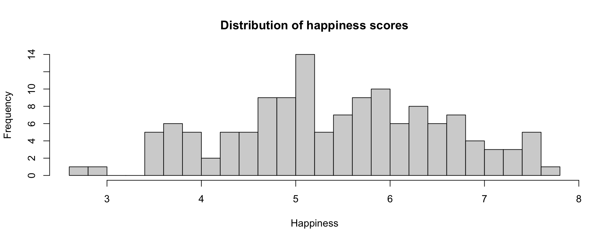

Describing Data I
Last time…
Measurement
- Conceptual clarity
- Measurement
- Be able to perform psychometric analysis from memory. (Kidding)
- Classical test theory
- Scale development takes time, thought, iteration, and data.
Today…
Describing data!1
Why do we describe data?
Understand your data
- There’s a lot to learn from descriptive statistics
Find errors in data entry or collection
Happiness
Examples today are based on data from the 2015 World Happiness Report, which is an annual survey part of the Gallup World Poll.
The dataset is available on GitHub for those interested in trying at home.1
Country Happiness GDP Support Life Freedom
1 Albania 4.606651 9.251464 0.6393561 68.43517 0.7038507
2 Argentina 6.697131 NA 0.9264923 67.28722 0.8812237
3 Armenia 4.348320 8.968936 0.7225510 65.30076 0.5510266
4 Australia 7.309061 10.680326 0.9518616 72.56024 0.9218710
5 Austria 7.076447 10.691354 0.9281103 70.82256 0.9003052
6 Azerbaijan 5.146775 9.730904 0.7857028 61.97585 0.7642895
7 Bahrain 6.007375 NA 0.8525507 65.84793 0.8495212
8 Bangladesh 4.633474 8.050836 0.6014683 61.72731 0.8147963
9 Belarus 5.718908 9.725568 0.9240726 65.31599 0.6227534
10 Belgium 6.904219 10.626178 0.8852088 71.34201 0.8694749
11 Benin 3.624664 7.598665 0.4343885 50.58654 0.7333836
12 Bhutan 5.082129 8.969653 0.8475744 60.61641 0.8301015
13 Bolivia 5.834329 8.778191 0.8287058 59.73697 0.8836251
14 Bosnia and Herzegovina 5.117178 9.178364 0.6557236 67.63831 0.6306980
15 Botswana 3.761965 9.654463 0.8156561 55.25417 0.8571689
16 Brazil 6.546897 9.582796 0.9066931 64.59515 0.7989353
17 Burkina Faso 4.418930 7.357180 0.7053935 50.83040 0.6591027
18 Cambodia 4.162165 8.094646 0.7286103 58.16891 0.9563198
19 Cameroon 5.037965 7.986924 0.6463125 47.95748 0.7914286
20 Canada 7.412773 10.664708 0.9390671 71.76053 0.9314690
21 Chad 4.322675 7.695847 0.7512522 44.87283 0.4743609
22 Chile 6.532750 10.009483 0.8271419 71.57857 0.7688814
23 China 5.303878 9.501941 0.7937337 68.59845 NA
24 Colombia 6.387572 9.471478 0.8899000 63.84050 0.7908980
25 Congo (Brazzaville) 4.690830 8.685216 0.6421362 53.51811 0.8501725
26 Congo (Kinshasa) 3.902742 6.613966 0.7672356 50.01415 0.5737638
27 Costa Rica 6.854004 9.580832 0.8782730 69.49661 0.9069257
28 Croatia 5.205438 9.919107 0.7683634 67.59174 0.6935230
29 Cyprus 5.439161 NA 0.7695561 72.48824 0.6280348
30 Czech Republic 6.608017 10.308098 0.9113626 69.60413 0.8084842
31 Denmark 7.514425 10.676427 0.9597013 70.70427 0.9414364
32 Dominican Republic 5.061862 9.488247 0.8931978 63.16206 0.8560253
33 Ecuador 5.964075 9.270621 0.8558892 66.94999 0.8008705
34 Egypt 4.762538 9.234282 0.7297443 61.27411 0.6592615
35 El Salvador 6.018496 9.001607 0.7907554 63.90189 0.7333559
36 Estonia 5.628909 10.210577 0.9179296 66.66893 0.8146924
37 Ethiopia 4.573155 7.333114 0.6255968 55.63552 0.8026426
38 Finland 7.447926 10.553578 0.9478006 71.21165 0.9298619
39 France 6.357625 10.530862 0.8957194 71.97216 0.8170362
40 Gabon 4.661013 9.845919 0.7558620 55.68797 0.6713007
41 Georgia 4.121941 8.902565 0.5173716 65.30637 0.6399450
42 Germany 7.037138 10.694968 0.9259232 71.30358 0.8894289
43 Ghana 3.985916 8.277353 0.6874486 53.54028 0.8520162
44 Greece 5.622519 10.093509 0.8348247 70.67931 0.5317363
45 Guatemala 6.464987 8.886600 0.8228375 61.96589 0.8686398
46 Guinea 3.504694 7.037234 0.5788596 50.16096 0.6659530
47 Haiti 3.569762 7.413352 0.5643197 52.95332 0.3982955
48 Honduras 4.845437 8.470057 0.7723755 63.41061 0.5340577
49 Hungary 5.344383 10.107333 0.8587338 66.59668 0.5577214
50 India 4.342079 8.659320 0.6101333 59.07401 0.7772253
51 Indonesia 5.042800 9.247716 0.8094781 60.31876 0.7794183
52 Iran 4.749956 9.717675 0.5724069 65.53881 NA
53 Iraq 4.493377 9.546689 0.6844348 60.94004 0.5994599
54 Ireland 6.830125 10.839026 0.9529426 71.29931 0.8922769
55 Israel 7.079411 10.363305 0.8641302 72.66603 0.7527840
56 Italy 5.847684 10.394681 0.9089865 72.46586 0.5747657
57 Ivory Coast 4.445039 8.095674 0.7039917 45.04416 0.7997455
58 Japan 5.879684 10.488579 0.9226572 74.82469 0.8316942
59 Jordan 5.404593 9.352019 0.8304439 64.18116 0.7665170
60 Kazakhstan 5.949995 10.042273 0.9313493 63.64412 0.7401328
61 Kenya 4.357618 7.970297 0.7769231 54.14322 0.7929903
62 Kosovo 5.077461 NA 0.8052708 62.00486 0.5610483
63 Kuwait 6.146032 NA 0.8230178 65.09716 0.8216624
64 Kyrgyzstan 4.905376 8.061284 0.8565845 62.41665 0.8131759
65 Latvia 5.880598 10.037901 0.8793724 65.33850 0.6563932
66 Lebanon 5.171971 9.728823 0.7417077 69.59850 0.5967498
67 Liberia 2.701591 6.739805 0.6376660 51.28914 0.6714309
68 Libya 5.615405 9.555550 0.8679877 61.16175 0.7745450
69 Lithuania 5.711378 10.185368 0.9285235 65.67057 0.6414702
70 Luxembourg 6.701571 11.429970 0.9336046 72.53326 0.9322564
71 Macedonia 4.975590 9.446383 0.7663682 65.56458 0.6603189
72 Madagascar 3.592514 7.228697 0.6467165 56.31346 0.5447536
73 Malawi 3.867638 6.660712 0.4943816 54.48933 0.8013907
74 Malaysia 6.322121 10.136704 0.8176163 64.74024 0.6745945
75 Mali 4.582098 7.350600 0.8301892 49.19207 0.6337535
76 Malta 6.613394 NA 0.9187649 70.77766 0.9121780
77 Mauritania 3.922664 8.231690 0.8749459 53.24210 0.4470866
78 Mexico 6.236287 9.707403 0.7606143 67.78441 0.7194660
79 Moldova 6.017472 8.447127 0.8399055 61.26768 0.5952414
80 Mongolia 4.982720 9.346310 0.9055244 62.64931 0.6855108
81 Montenegro 5.124921 9.616770 0.7396305 65.11017 0.5833173
82 Morocco 5.160294 8.906810 0.6537850 63.91926 0.6934186
83 Myanmar 4.223846 NA 0.7520643 57.09218 0.8079711
84 Nepal 4.812437 7.746914 0.7476119 60.75210 0.7634472
85 Netherlands 7.324437 10.748624 0.8790104 71.09193 0.9039788
86 New Zealand 7.418121 10.431994 0.9873435 71.92076 0.9417843
87 Nicaragua 5.924113 8.480531 0.8269085 65.85806 0.8092592
88 Niger 3.671454 6.803244 0.7130196 52.82997 0.7281283
89 Nigeria 4.932915 8.644704 0.8116477 45.24734 0.6804703
90 North Cyprus 5.842550 NA 0.7913827 NA 0.7853528
91 Norway 7.603434 11.068009 0.9468340 70.52483 0.9476205
92 Pakistan 4.823195 8.464853 0.5617201 57.25552 0.5865462
93 Palestinian Territories 4.695239 8.365737 0.7661012 62.83750 0.5560409
94 Panama 6.605550 9.942081 0.8826150 67.68180 0.8466692
95 Paraguay 5.559724 9.065535 0.9141991 63.34425 0.8061247
96 Peru 5.577263 9.358279 0.7984183 65.03024 0.8022690
97 Philippines 5.547489 8.843670 0.8535886 59.46133 0.9115336
98 Poland 6.007022 10.120240 0.8930904 66.95756 0.7934622
99 Portugal 5.080866 10.195284 0.8662139 70.45056 0.8004403
100 Qatar 6.374529 NA NA 67.82797 NA
101 Romania 5.777491 9.896219 0.7869673 66.41331 0.7958477
102 Russia 5.995539 10.012393 0.9243633 64.08343 0.6854547
103 Rwanda 3.483109 7.416408 0.6781436 54.64949 0.9078923
104 Saudi Arabia 6.345492 10.815763 0.8197497 63.71784 0.8202072
105 Senegal 4.617001 7.725880 0.7015345 57.57685 0.7195333
106 Serbia 5.317685 9.462955 0.8162510 65.63837 0.5458920
107 Sierra Leone 4.908618 7.374071 0.6105937 43.74034 0.6242961
108 Singapore 6.619525 NA 0.8664367 76.04466 0.8868909
109 Slovakia 6.162004 10.214083 0.9434537 67.49669 0.5871577
110 Slovenia 5.740642 10.269225 0.9011638 70.51219 0.8960073
111 Somalia 5.353645 NA 0.5992811 47.28276 0.9678693
112 South Africa 4.887326 9.428298 0.8980963 50.14693 0.8624494
113 South Korea 5.780211 10.446025 0.7683506 73.85837 0.6158488
114 Spain 6.380663 10.402864 0.9564719 73.37998 0.7320005
115 Sri Lanka 4.611607 9.319309 0.8625001 64.64014 0.9020748
116 Sweden 7.288922 10.712334 0.9294600 71.74087 0.9350721
117 Switzerland 7.572137 10.914726 0.9383337 72.86915 0.9278024
118 Syria 3.461913 NA 0.4639129 64.83573 0.4482709
119 Taiwan 6.450088 NA 0.8853889 70.75000 0.7008105
120 Tajikistan 5.124211 7.869648 0.8439325 61.64697 0.8465421
121 Tanzania 3.660597 7.831087 0.7902626 56.12052 0.7586847
122 Thailand 6.201763 9.637293 0.8663245 65.64534 0.8849165
123 Togo 3.768302 7.241591 0.4785934 51.97361 0.7715772
124 Tunisia 5.131612 9.292294 0.6094700 63.35026 0.7113734
125 Turkey 5.514465 9.864202 0.8512246 65.69592 0.6531968
126 Turkmenistan 5.791460 9.669529 0.9601585 58.44135 0.7013584
127 Ukraine 3.964543 8.895362 0.9094397 63.52374 0.4305920
128 United Arab Emirates 6.568398 NA 0.8241367 68.35641 0.9150362
129 United Kingdom 6.515445 10.567661 0.9359857 71.05131 0.8329261
130 United States 6.863947 10.877965 0.9035711 70.03674 0.8487535
131 Uruguay 6.628080 9.917072 0.8914935 68.11640 0.9168797
132 Uzbekistan 5.972364 8.630272 0.9682252 60.53566 0.9799371
133 Venezuela 5.568800 NA 0.9110869 64.58602 0.5121593
134 Vietnam 5.076315 8.637988 0.8486767 66.04872 NA
135 Yemen 2.982674 7.843260 0.6686835 54.08096 0.6099808
136 Zimbabwe 3.703191 7.430315 0.7358003 50.36258 0.6671933
Generosity Corruption
1 -0.082337685 0.88479304
2 NA 0.85090619
3 -0.186696529 0.90146220
4 0.315701962 0.35655439
5 0.089088559 0.55747962
6 -0.222635135 0.61555255
7 NA NA
8 -0.059777591 0.72060090
9 -0.100902960 0.66867816
10 0.052451991 0.46878463
11 0.001502594 0.85009819
12 0.285040438 0.63395578
13 -0.023433717 0.86237395
14 -0.046468392 0.95985365
15 -0.126697809 0.86029297
16 -0.027783971 0.77133906
17 0.020786475 0.69272399
18 0.212208703 0.82513022
19 0.058221977 0.86804903
20 0.237486422 0.42715225
21 -0.041133381 0.88863939
22 0.026815979 0.81151134
23 -0.262474209 NA
24 -0.107555106 0.84289932
25 -0.143441707 0.84135950
26 -0.014224946 0.86637801
27 -0.058310181 0.76141941
28 -0.100691713 0.84854555
29 NA 0.89279515
30 -0.152868271 0.88646746
31 0.213263184 0.19101639
32 -0.068872340 0.75528818
33 -0.118297137 0.66582751
34 -0.098499060 0.68449807
35 -0.166342810 0.80454427
36 -0.173507467 0.56873447
37 0.125852734 0.56702733
38 0.100564413 0.22336966
39 -0.150623634 0.64060205
40 -0.224478483 0.86677748
41 -0.175952777 0.50241679
42 0.164857537 0.41216829
43 -0.030955523 0.94543612
44 -0.278941423 0.82395965
45 0.050059937 0.82165492
46 0.054546587 0.76215202
47 0.312127113 0.77740395
48 -0.095861293 0.84808272
49 -0.208412573 0.90753031
50 -0.016868994 0.77643496
51 0.457429528 0.94596726
52 0.141305760 NA
53 -0.016951477 0.76216716
54 0.232017383 0.40875691
55 0.099938810 0.78942990
56 -0.070082054 0.91275305
57 -0.035634797 0.74424964
58 -0.169799194 0.65444309
59 -0.069207847 NA
60 -0.051406134 0.71384430
61 0.238054082 0.85254985
62 NA 0.85064709
63 NA NA
64 0.226265088 0.85772502
65 -0.085272886 0.80840039
66 0.054535788 0.88895327
67 -0.009916847 0.90267265
68 -0.076456018 NA
69 -0.262404770 0.92417407
70 0.036430217 0.37539047
71 -0.048491806 0.82417899
72 -0.029426256 0.86095339
73 0.085140154 0.83482540
74 0.201898143 0.83789223
75 -0.042629778 0.80004674
76 NA 0.66388631
77 0.073142350 0.71535844
78 -0.156158805 0.70797193
79 -0.038925178 0.94311881
80 0.157298073 0.90021819
81 -0.145327449 0.78123259
82 -0.248565361 0.86777443
83 NA 0.63330519
84 0.242998511 0.82350838
85 0.247195244 0.41182211
86 0.320652515 0.18588871
87 0.081847742 0.72799838
88 -0.009490362 0.70254970
89 -0.045139253 0.92610925
90 NA 0.65918028
91 0.228181615 0.29881436
92 0.071716130 0.71664119
93 -0.150193453 0.77430135
94 -0.002205028 0.80994290
95 0.003749649 0.86288828
96 -0.100029737 0.88373041
97 -0.056648508 0.75519156
98 -0.103777371 0.81009632
99 -0.171841606 0.94105077
100 NA NA
101 -0.145152822 0.96165097
102 -0.179458767 0.91341829
103 0.035836529 0.09460447
104 -0.070376605 NA
105 -0.092522651 0.76549017
106 -0.062717922 0.85935801
107 0.050585665 0.82482803
108 NA 0.09894388
109 -0.142087966 0.92754513
110 -0.000629284 0.89219791
111 NA 0.41023576
112 -0.138439283 0.85269475
113 -0.048341293 0.84072161
114 -0.084349990 0.82166493
115 0.310886711 0.85947096
116 0.197725981 0.23196414
117 0.097075745 0.20953351
118 NA 0.68523693
119 NA 0.85719484
120 0.025703574 0.74168962
121 0.142459080 0.90642261
122 0.305076480 0.91365111
123 -0.063052811 0.73326176
124 -0.240898952 0.81482500
125 NA 0.80607623
126 0.063167505 NA
127 -0.012190276 0.95247275
128 NA NA
129 0.288037807 0.45613372
130 0.201775953 0.69754261
131 -0.048586730 0.67347568
132 0.373070538 0.47091693
133 NA 0.81309682
134 0.087306730 NA
135 -0.139901683 0.82909757
136 -0.081429422 0.81045735[1] "Country" "Happiness" "GDP" "Support" "Life"
[6] "Freedom" "Generosity" "Corruption"Happiness: “Please imagine a ladder, with steps numbered from 0 at the bottom to 10 at the top. The top of the ladder represents the best possible life for you and the bottom of the ladder represents the worst possible life for you. On which step of the ladder would you say you personally feel you stand at this time?”
GDP: Log gross domestic product per capita
Support: “If you were in trouble, do you have relatives or friends you can count on to help you whenever you need them, or not?”
Life: Healthy life expectancy at birth
Freedom: “Are you satisfied or dissatisfied with your freedom to choose what you do with your life?”
Corruption: “Is corruption widespread throughout the government or not” and “Is corruption widespread within businesses or not?” (average of 2 questions)
Generosity: “Have you donated money to a charity in the past month?” (residual, adjusting for GDP)
[1] 136 8Rows: 136
Columns: 8
$ Country <chr> "Albania", "Argentina", "Armenia", "Australia", "Austria", …
$ Happiness <dbl> 4.606651, 6.697131, 4.348320, 7.309061, 7.076447, 5.146775,…
$ GDP <dbl> 9.251464, NA, 8.968936, 10.680326, 10.691354, 9.730904, NA,…
$ Support <dbl> 0.6393561, 0.9264923, 0.7225510, 0.9518616, 0.9281103, 0.78…
$ Life <dbl> 68.43517, 67.28722, 65.30076, 72.56024, 70.82256, 61.97585,…
$ Freedom <dbl> 0.7038507, 0.8812237, 0.5510266, 0.9218710, 0.9003052, 0.76…
$ Generosity <dbl> -0.082337685, NA, -0.186696529, 0.315701962, 0.089088559, -…
$ Corruption <dbl> 0.8847930, 0.8509062, 0.9014622, 0.3565544, 0.5574796, 0.61…Distributions
A distribution is a description of the [relative] number of times a variable X will take each of its unique values.
Moments of a distribution
- Mean
- Variance
- Skew
- Kurtosis
Mean, \(\mu\)
The mean is the average. The population mean is represented by the Greek symbol \(\mu\).
Example: a set of numbers is:
7, 7, 8, 3, 9, 2.
For a vector \(x\) with length \(N\), the mean \((\mu)\) of \(x\) is:
\[\mu = \frac{\Sigma_{i=1}^N(x_i)}{N} = \frac{\Sigma(x_i)}{N}=\frac{7+7+8+3+9+2}{6}=\frac{36}{6}=6\]
Properties of the mean
The mean can take a value not found in the dataset.
Fulcrum of the data
The mean is strongly influenced by outliers.
Deviations from the mean sum to 0
Can only be used with interval- and ratio-level variables.
The expected value of a (continuous) random variable, \(E(X)\), is the mean.
It’s important to remember that the mean of a population (or group) may not represent well some (or any) members of the population.
Example: André-François Raffray and the French apartment
Other measures of central tendency
- Median – the middle point of the data
- e.g., in the set of numbers
7, 7, 8, 3, 9, 2, the median number is 7. - Can be used with ordinal-, interval-, or ratio-level variables.
- e.g., in the set of numbers
- Mode – the number that most commonly occurs in the distribution.
- e.g., in the set of numbers above, the mode is 7.
- Can be used with any kind of variable.
Center and spread
Distributions are most often described by their first two moments, mean and variance.
Typically, these moments are the two used in common inferential techniques.
The mean represents the average score in a distribution. A good measure of spread will tell us something about how the typical score deviates from the mean.
Why can’t we use the average deviation?
Average deviation
Sums of squares
Our solution is to square deviations.
[1] 6[1] 1 1 4 9 9 16[1] 40The sum of squared deviations is referred to as the Sum of Squares (SS).
Variance
We calculate the average squared deviation: this is our variance, \(\sigma^2\):
Variance
Good things about variance:
- It’s additive.
- Given two variables X and Y, if I create \(Z = X + Y\) then \(Var(Z) = Var(X) + Var(Y)\)
- It can be calculated using expected values.
- \(\sigma^2 = E(X^2) - (E(X))^2\)
- Represents all values in a dataset
Variance
Bad things about variance:
- What the heck does it mean?
Standard deviation \(\sigma\) is the square root of the variance.
Code
world %>% ggplot(aes(x = Happiness)) +
geom_histogram(fill = "gray") +
geom_vline(aes(xintercept = mean(Happiness))) +
geom_vline(aes(xintercept = median(Happiness))) +
geom_label(aes(x = mean(Happiness), y = maxFreq(Happiness)),
label = "mean") +
geom_label(aes(x = median(Happiness), y = maxFreq(Happiness)*2),
label = "median") +
labs(y = "Frequency") +
theme_bw()In a normal distribution, the mean, median, and mode are all relatively equal.
Code
world %>% ggplot(aes(x = Corruption)) +
geom_histogram(fill = "gray") +
geom_vline(aes(xintercept = mean(Corruption, na.rm=T))) +
geom_vline(aes(xintercept = median(Corruption, na.rm=T))) +
geom_label(aes(x = mean(Corruption, na.rm=T), y = maxFreq(Corruption)), label = "mean") +
geom_label(aes(x = median(Corruption, na.rm=T), y = maxFreq(Corruption)*2), label = "median") +
labs(y = "Frequency") +
theme_bw()In a skewed distribution, both the mean and median get pulled away from the mode. The mean is pulled further.
Skew and Kurtosis
Moments 3 and 4 of a distribution are skew and kurtosis.
Skewness = asymmetry
Kurtosis = pointyness.
Most inferential statistics assume distributions are not skewed and are mesokurtic.
Moments of a distribution
Where do the names come from?
- First moment: Mean \[\mu = \frac{\Sigma(x_i)}{N}\]
- Second moment: Variance \[\sigma^2 = \frac{\Sigma(X_i-\mu)^2}{N}\]
- Third moment: Skew \[skewness(X) = \frac{1}{N\sigma^3}\Sigma(X_i-\mu)^3\]
- Fourth moment: Kurtosis \[kurtosis(X) = \frac{1}{N\sigma^4}\Sigma(X_i-\mu)^4-3\]
problems
vars n mean sd median trimmed mad min max range skew
Happiness 1 136 5.43 1.11 5.42 5.44 1.20 2.70 7.60 4.90 -0.07
GDP 2 121 9.22 1.16 9.45 9.28 1.20 6.61 11.43 4.82 -0.43
Support 3 135 0.80 0.12 0.83 0.81 0.12 0.43 0.99 0.55 -0.88
Life 4 135 63.12 7.46 64.64 63.73 7.35 43.74 76.04 32.30 -0.67
Freedom 5 132 0.75 0.13 0.78 0.76 0.16 0.40 0.98 0.58 -0.45
Generosity 6 120 0.00 0.16 -0.03 -0.01 0.15 -0.28 0.46 0.74 0.59
Corruption 7 125 0.73 0.20 0.81 0.77 0.12 0.09 0.96 0.87 -1.48
kurtosis se
Happiness -0.69 0.10
GDP -0.78 0.11
Support 0.11 0.01
Life -0.34 0.64
Freedom -0.60 0.01
Generosity -0.27 0.01
Corruption 1.53 0.02How do we know if there is a problem and what should we do?
There are several approaches to detect and deal with non-normality:
- Overall tests of normality (e.g., Kolmogorov-Smirnov, Shapiro-Wilk tests)
- Tests of extremity for a particular moment
- \[SE_{skew} =\sqrt{\frac{6n(n-1)}{(n-1)(n+2)(n+3)}}\]
- Determine the impact of the problem on inferences. How does it affect your data?
- Use procedures that are immune to the problem.
The mean is more affected than the median by extreme values. If the data are severely skewed or there are extreme outliers, inferential statistics might be affected. There are several remedies:
Transform the data
Exclude the outliers
Use a trimmed mean (e.g., eliminate upper and lower 10%; “robust statistics”)
Use the median (not susceptible to extreme values)
What are the pros and cons of these approaches? What justifies their use?
Other measures of variability
Range – the difference between the maximum data point and the smallest
Other measures of variability
Interquartile range (IQR) – the middle 50%
Code
world %>% ggplot(aes(x = Corruption)) +
geom_histogram(fill = "gray") +
geom_vline(aes(xintercept = median(Corruption, na.rm=T))) +
geom_label(aes(x = median(Corruption, na.rm=T),
y = maxFreq(Corruption)*2),
label = "median") +
geom_vline(aes(xintercept = quantile(Corruption,
probs = .25,
na.rm=T)),
color = "blue") +
geom_vline(aes(xintercept = quantile(Corruption,
probs = .75,
na.rm=T)),
color = "blue") +
geom_label(aes(x = quantile(Corruption,
probs = .25,
na.rm=T),
y = maxFreq(Corruption)*3,
label = "lower IQR"),
color = "blue") +
geom_label(aes(x = quantile(Corruption,
probs = .75,
na.rm=T),
y = maxFreq(Corruption)*4,
label = "upper IQR"),
color = "blue") +
labs(y = "Count") +
theme_bw()Bias and efficiency
Population versus sample
For those following along at home:
Population versus sample
- The value that represents the entire population is called a parameter.
- We collect samples to estimate the properties of populations; the statistic that represents a sample is called a statistic.
- Population parameters are represented with Greek letters ( \(\mu\) , \(\sigma\)).
- Sample statistics are represented with Latin letters ( \(M\) , \(\bar{X}\) , \(s\)).
Bias and efficiency
In deciding about different ways to estimate a parameter (e.g., central tendency), it is important to consider bias and efficiency (and sometimes consistency).
Bias: An estimator is biased if its expected value and the true value of the parameter are different.
Efficiency: Of two alternative estimators, the more efficient one will estimate the parameter with less error for the same sample size.
Bias and efficiency
Robust statistics sacrifice efficiency to control possible bias.
Variance (and standard deviation) are biased estimators when applied to samples.
- Using the formulas we’ve described, these statistics will underestimate variability in the population.
Population versus sample
Variance
Population \[\sigma^2 = \frac{\Sigma(X_i-\mu)^2}{N}\]
Sample \[s^2 = \hat{\sigma}^2 = \frac{\Sigma(X_i-\bar{X})^2}{N-1}\]
Standard Deviation
Population \[\sigma = \sqrt{\frac{\Sigma(X_i-\mu)^2}{N}}\]
Sample \[s = \hat{\sigma} = \sqrt{\frac{\Sigma(X_i-\bar{X})^2}{N-1}}\]
Code
# this is the code that simulates the bias of the variance estimator
# in this simulation, we draw from a known population distribution with
# standard deviation 10.
# for each sample, we calculate the variance using both the population
# formula (dividing by N) and the sample formula (dividing by N-1)
# we repeat this process 10,000 times for each sample size
# for each sample size, we calculate the average estimate of the variance
# using each formula
# this is compared to 100, the true known population variance
set.seed(100917) #so every time I run this, I gets same random draws
# custom function to estimate variance using population formula
sample_var = function(x){
mx = mean(x, na.rm=T)
deviations = x-mx
sq_dev = deviations^2
ss = sum(sq_dev)
nx = length(!is.na(x)) #how many not missing
sample_var = ss/nx
}
#number of samples
draws = 10000
#which sample sizes to test
sample_sizes = seq(from = 5, to = 100, by = 5) # creates c(5, 10, 15, 20, ..., 90, 95, 100)
#data frame to store simulations
var_estimates = data.frame(size = sample_sizes, sample = NA, estimate = NA)
for(i in sample_sizes){ # loop through sample sizes. In each loop, i takes on the next value in the sample_sizes vector
sample_est = numeric(length = draws) #create empty vector
estimate = numeric(length = draws) # create empty vector
for(j in 1:draws){ # loop through draws. In each loop, j takes on new integer
sample = rnorm(n = i, mean = 1000, sd = 10) # randomly draw sample from pop with variance 100
sample_est[j] = sample_var(sample) # calculate variance using population formula
estimate[j] = var(sample) # calculate variance using sample formula
}
row = which(var_estimates$size == i) #which row in data frame does this belong to?
var_estimates$sample[row] = mean(sample_est) # average of variance estimates (using pop) across draws
var_estimates$estimate[row] = mean(estimate) # average of variances (using sample) across draws
}
var_estimates %>%
mutate(population = 100) %>% #add population variable
pivot_longer(cols = c(sample, estimate, population)) %>% # long-form
mutate(name = factor(name, #lovely labels
levels = c("population","sample","estimate"),
labels = c("Population Variance",
"Sample Variance",
"Sample Estimate of Population Variance"))) %>%
ggplot(aes(x = size, y = value)) + # plot, define x and y varibles
geom_line(aes(color = name), size = 3) + # draw line from each point
scale_x_continuous("Sample Size", breaks = sample_sizes) + # label x axis
scale_color_discrete("")+ # no label for color legend
geom_point() + # add points
theme_bw(base_size = 25) # nice theme, big font
Standardized scores
Standardized scores (z-scores)
\[ z = \frac{x_i - M}{s} \]
Scores interpreted as distance from the mean, in standard deviations.
Properties of z-scores
- \(\Large \Sigma z = 0\)
- \(\Large \Sigma z^2 = N\)
- \(\Large s_z = \frac{\Sigma z^2}{N}\)
Standardized scores (z-scores)
\[ z = \frac{x_i - M}{s} \] Why is this useful?
Compare across scales and unit of measures
More easily identify extreme data
Which variable has outliers?
vars n mean sd median min max range skew kurtosis se
Country 1 136 NaN NA NA Inf -Inf -Inf NA NA NA
Happiness 2 136 5.43 1.11 5.42 2.70 7.60 4.90 -0.07 -0.69 0.10
GDP 3 121 9.22 1.16 9.45 6.61 11.43 4.82 -0.43 -0.78 0.11
Support 4 135 0.80 0.12 0.83 0.43 0.99 0.55 -0.88 0.11 0.01
Life 5 135 63.12 7.46 64.64 43.74 76.04 32.30 -0.67 -0.34 0.64
Freedom 6 132 0.75 0.13 0.78 0.40 0.98 0.58 -0.45 -0.60 0.01
Generosity 7 120 0.00 0.16 -0.03 -0.28 0.46 0.74 0.59 -0.27 0.01
Corruption 8 125 0.73 0.20 0.81 0.09 0.96 0.87 -1.48 1.53 0.02Which variable has outliers?
vars n mean sd median min max range skew kurtosis se
Country 1 136 NaN NA NA Inf -Inf -Inf NA NA NA
Happiness 2 136 0 1 -0.01 -2.46 1.96 4.42 -0.07 -0.69 0.09
GDP 3 121 0 1 0.19 -2.26 1.91 4.17 -0.43 -0.78 0.09
Support 4 135 0 1 0.20 -2.99 1.51 4.50 -0.88 0.11 0.09
Life 5 135 0 1 0.20 -2.60 1.73 4.33 -0.67 -0.34 0.09
Freedom 6 132 0 1 0.20 -2.64 1.71 4.34 -0.45 -0.60 0.09
Generosity 7 120 0 1 -0.21 -1.80 2.90 4.70 0.59 -0.27 0.09
Corruption 8 125 0 1 0.38 -3.20 1.14 4.34 -1.48 1.53 0.09Next time…
describing relationships